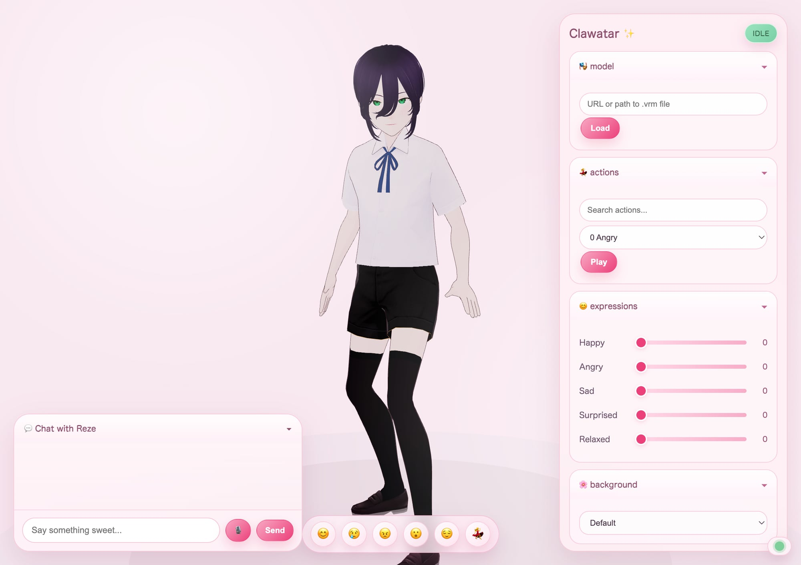
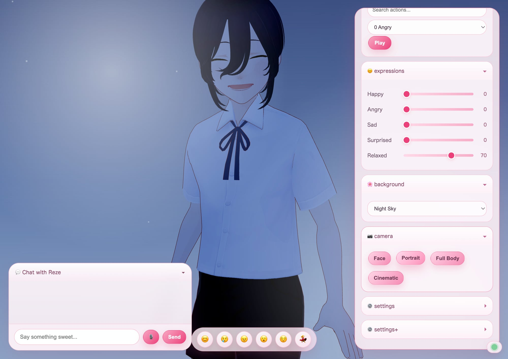
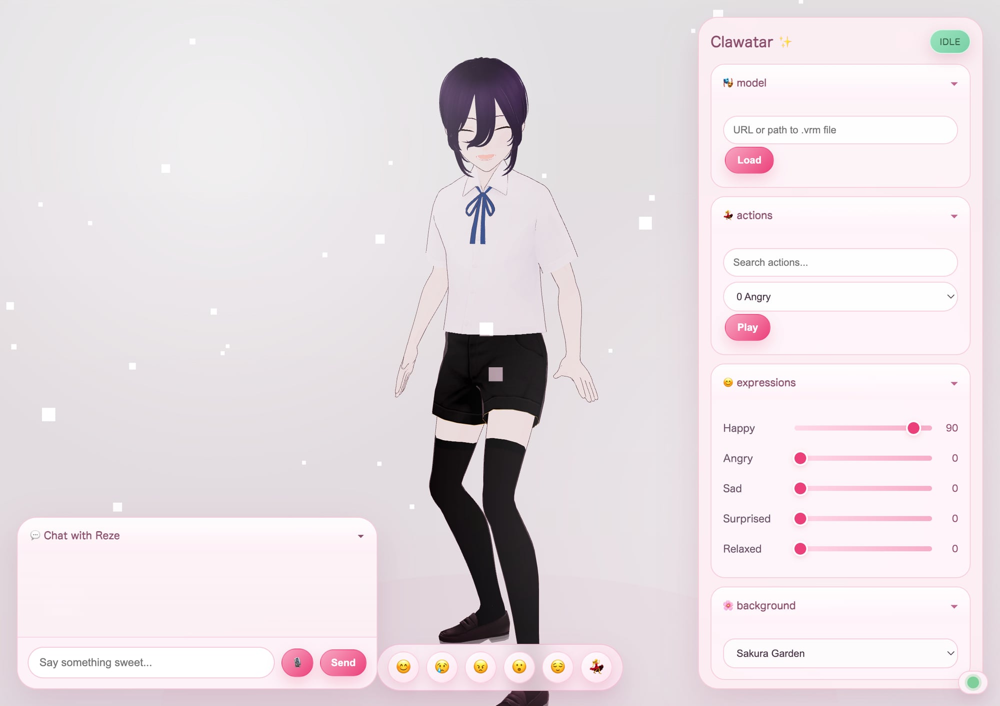
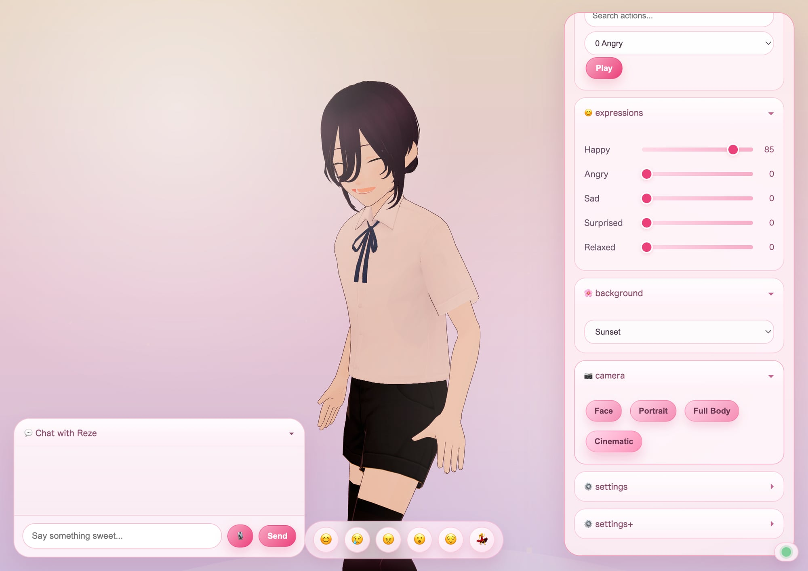

Web viewer
3D avatar, lip sync, video mode, camera presetsMultimodal companion on web and macOS
Her turns an AI assistant into a living avatar with voice, motion, lip sync, video mode, and cross-device presence. This page is the public demo entry point for the web experience and the macOS build.

Web viewer
3D avatar, lip sync, video mode, camera presets
Realtime voice
Video mode snapshots
Scene switching
Cross-device sync
Release shape
Public-facing entry point for the product. Best for fast testing, press links, and zero-install sharing.
Keep the binary outside the repo. Publish `.zip` or `.dmg` files through GitHub Releases and link them here after a `HerMac` release build.
Hold iOS release until you can use App Store Connect and TestFlight. The page already sets that expectation clearly.
Visual proof


Before users click
If the current release is unsigned or not notarized, say that on the page and in the release notes. Users should know they may need to use Open Anyway in macOS Security settings.
Once the hosted demo is live, set the URL in
site-config.js. Until then, the main CTA will stay
visibly disabled instead of sending users to a broken link. The
bundled viewer already includes the current voice and video mode UI.
Keep binaries in Releases, keep code in Git. This repo stays small, deployable, and easy to update from a single branch.